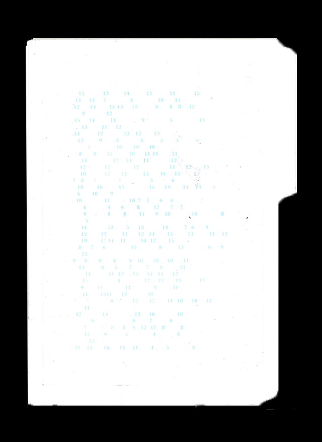

Truisms, 2024
Participants were asked to respond to a series of Jenny Holzer's Truisms statements by blacking out the phrases or words that did not resonate with them. This produced a new set of 30 responses which were compiled into the final piece.